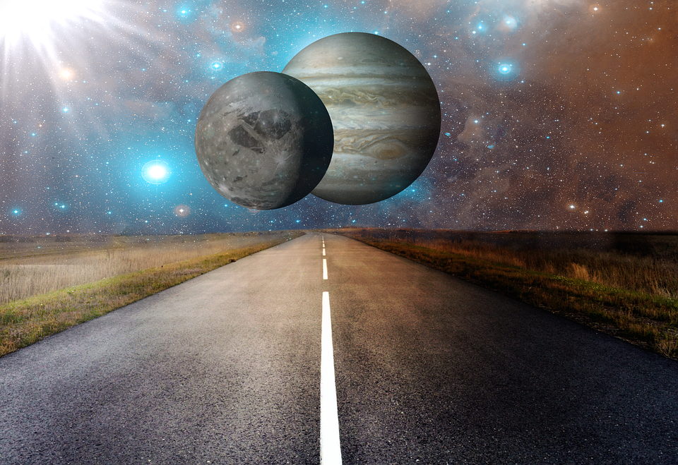

На Юпитере найден Гелий-3
Кто будет первым в очереди на сланцевый Гелий-3?
Кто будет первым в очереди на сланцевый Гелий-3?
Кратко: Нет, просто затмение.
Теперь еды хватит всем. Китайцам.
Кто будет первым в очереди на сланцевый Гелий-3?
Жарко, холодно и дождь из кипящего свинца